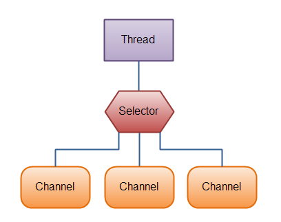
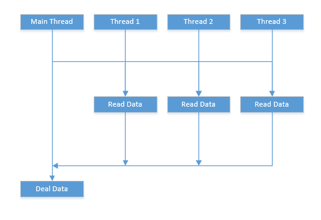
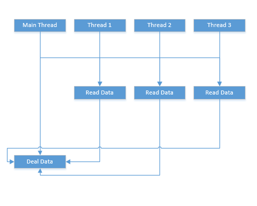
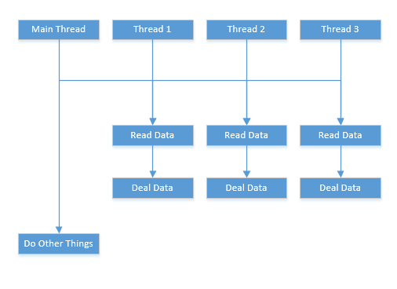

本文对
java中三种I/O方式的用法以及性能进行比较。这三种I/0方式对应着五大模型中的阻塞模型、多路复用模型、异步模型。I/O的应用场景通常包含磁盘I/O和网络I/O,本文从这两个方面介绍三种IO方式，比较三者之间的性能。
传统IO-BIO
Java.io 包几乎包含了所有操作输入、输出需要的类。所有这些流类代表了输入源和输出目标。Java.io 包中的流支持很多种格式，比如：基本类型、对象、本地化字符集等等。一个流可以理解为一个数据的序列。输入流表示从一个源读取数据，输出流表示向一个目标写数据。
IO流处理类
Java.io 包中输入流和输出流的类层次图如下：
IO流处理类分类
根据数据处理类型的不同，可将IO流分为字符流和字节流。因为数据编码的不同，而有了对字符进行高效操作的流对象，其本质就是基于字节流读取时，去查了指定的码表。所以java在操作字符流时必须指定字符编码，若果不指定，则使用默认的编码(Unicode)。
字符流和字节流的区别：
- 读写单位不同：字节流一字节（8bit）为单位，字符流以字符为单位，根据码表映射字符，一次可能读多个字节。
- 处理对象不同：字节流能处理所有类型的数据（例如图片，avi），而字符流只能处理字符类型的数据。
- 字节流操作的时候本身是不会用到缓冲区的，是对文件本身的直接操作。而字符流在操作的时候是会用到缓冲区的，通过缓冲区来操作文件。
字符流是为了简化开发提出来的流对象，其底层操作的还是字节流。所以字节流比字符流效率更高。
在字节流中。ByteArrayInputStream、StringBufferInputStream、FileInputStream 是三种基本的介质流，它们分别从Byte数组、StringBuffer、和本地文件中读取数据。PipedInputStream 是从与其它线程共用的管道中读取数据。ObjectInputStream 和所有FilterInputStream的子类都是装饰流（装饰器模式的主角）。意思是FileInputStream类可以通过一个String路径名创建一个对象，FileInputStream(String name)。而DataInputStream必须装饰一个类才能返回一个对象，DataInputStream(InputStream in)。ByteArrayOutputStream、FileOutputStream是两种基本的介质流，它们分别向Byte 数组、和本地文件中写入数据。PipedOutputStream 是向与其它线程共用的管道中写入数据，ObjectOutputStream 和所有FilterOutputStream的子类都是装饰流。
样例
向文件中写入2000M的内容
一字节一字节的输出
public static void writeAFileByBIO(){
long length = 2000 * 1024 * 1024;
byte b = 1;
File tmp = new File("E:\\tmp.dat");
FileOutputStream output = null;
try {
if (!tmp.exists()) {
tmp.createNewFile();
}
output = new FileOutputStream(tmp);
long start = System.currentTimeMillis();
while (length -- > 0) {
output.write(b);
}
System.out.println("写入时间:" + (System.currentTimeMillis() - start) + "ms");
} catch (IOException e) {
e.printStackTrace();
} finally {
if(output != null) {
try {
output.close();
} catch (IOException e) {
e.printStackTrace();
}
}
}
}
单字节的写入非常耗时,上面代码最终耗时3828580ms，FileOutputStream.write(int)调用native method write(int)。...\jdk\src\share\native\java\io\io_util.c中提供两个方法writeSingle和writeBytes,二者最终调用系统的write方法。
/* Write N bytes of BUF to FD. Return the number written, or -1.
This function is a cancellation point and therefore not marked with
__THROW. */
//fd:文件描述符,buf:字节内容,n:字节长度
extern ssize_t write (int __fd, const void *__buf, size_t __n) __wur;
由于阻塞模型，系统在写入文件时要和内核空间交互，cpu在用户和内核状态来回切换，用户线程不断阻塞，所以非常耗时。可以改造上面的方法，一次写入多个字节，减少系统写入方法的调用（IO次数）。牺牲内存空间来提高效率。
public static void writeAFileByBIO2(){
long length = 2000;
.........
byte[] byteArr = new byte[1024 * 1024];
//一次写入1M的内容
for (int i = 0; i < 1024 * 1024; i++) {
byteArr[i] = 1;
}
long start = System.currentTimeMillis();
while (length -- > 0) {
output.write(byteArr);
}
System.out.println("写入时间:" + (System.currentTimeMillis() - start) + "ms");
...
}
写入时间:10043ms
使用BufferedOutputStream从源码看,其实和第二种方式类似。但时间却差了好几十倍，原因不明，有可能是因为synchronized关键字的原因，参考[https://stackoverflow.com/questions/49065340/why-fileinputstream-is-much-faster-then-bufferedinputstream-with-the-same-buffer?answertab=oldest#tab-top]。
public static void writeAFileByBIO3(){
..........
long length = 2000 * 1024 * 1024;
try {
....
output = new BufferedOutputStream(new FileOutputStream(tmp),1024 * 1024);
long start = System.currentTimeMillis();
while (length -- > 0) {
output.write(1);
}
System.out.println("写入时间:" + (System.currentTimeMillis() - start) + "ms");
}
.......
}
写入时间:48568ms
读取刚刚的文件
单字节读取,跟写入时情况相同，超级慢。
public static void readFromFileByBIO1(){
File tmp = new File("E:\\tmp.dat");
FileInputStream is = null;
try {
is = new FileInputStream(tmp);
long start = System.currentTimeMillis();
while (is.read() > -1) {
}
System.out.println("读取时间:" + (System.currentTimeMillis() - start) + "ms");
} catch (IOException e) {
e.printStackTrace();
} finally {
if(is != null) {
try {
is.close();
} catch (IOException e) {
e.printStackTrace();
}
}
}
}
读取时间:2791450ms
一次读取1M,非常快。
public static void readFromFileByBIO1(){
........
try {
is = new FileInputStream(tmp);
byte[] buf = new byte[1024 * 1024];
long start = System.currentTimeMillis();
while (is.read(buf) > -1) {
}
System.out.println("读取时间:" + (System.currentTimeMillis() - start) + "ms");
}
.........
}
读取时间:1549ms
同样，使用BufferedInputStream，将size设置为 1024 * 1024，比上一种方法要慢。
public static void readFromFileByBIO1(){
........
try {
is = new BufferedInputStream(new FileInputStream(tmp),1024 * 1024);
long start = System.currentTimeMillis();
while (is.read() > -1) {
}
System.out.println("读取时间:" + (System.currentTimeMillis() - start) + "ms");
}
.........
}
读取时间:51694ms
NIO
Java NIO是java 1.4之后新出的一套IO接口，这里的的新是相对于原有标准的Java IO和Java Networking接口。NIO提供了一种完全不同的操作方式。NIO中的N可以理解为Non-blocking，不单纯是New。
NIO与标准IO的区别。
- 标准的
IO编程接口是面向字节流和字符流的。而NIO是面向通道和缓冲区的，数据总是从通道中读到buffer缓冲区内，或者从buffer写入到通道中。
Java NIO使我们可以进行非阻塞IO操作(五大IO模型中的非阻塞模型)。比如说，单线程中从通道读取数据到buffer，同时可以继续做别的事情，当数据读取到buffer中后，线程再继续处理数据。写数据也是一样的。Java NIO的Selector允许一个单独的线程来监视多个输入通道，你可以注册多个通道使用一个选择器，然后使用一个单独的线程来“选择”通道：这些通道里已经有可以处理的输入，或者选择已准备写入的通道。这种选择机制，使得一个单独的线程很容易来管理多个通道。

Buffer缓冲区
buffer缓冲区实质上就是一块内存，用于写入数据，也供后续再次读取数据。这块内存被NIO Buffer管理，并提供一系列的方法用于更简单的操作这块内存。
Buffer的容量，位置，上限

- 容量：作为一块内存，
buffer有一个固定的大小，叫做capacity容量。也就是最多只能写入容量值得字节，整形等数据。一旦buffer写满了就需要清空已读数据以便下次继续写入新的数据。 - 位置：当写入数据到
Buffer的时候需要中一个确定的位置开始，默认初始化时这个位置position为0，一旦写入了数据比如一个字节，整形数据，那么position的值就会指向数据之后的一个单元，position最大可以到capacity-1。当从Buffer读取数据时，也需要从一个确定的位置开始。buffer从写入模式变为读取模式时，position会归零，每次读取后，position向后移动。 - 上限：在写模式，
limit的含义是我们所能写入的最大数据量。它等同于buffer的容量。一旦切换到读模式，limit则代表我们所能读取的最大数据量，他的值等同于写模式下position的位置。
NIO还有许多概念，像“零拷贝”、Scatter / Gather等。相关的解释参考即可学院。这里以磁盘IO的方式比较标准IO与NIO的差别。
样例
向文件中写入2000M的内容
public static void writeAFileByNIO(){
File tmp = new File("E:\\tmp.dat");
FileChannel inChannel = null;
try {
if (!tmp.exists()) {
tmp.createNewFile();
}
RandomAccessFile aFile = new RandomAccessFile(tmp, "rw");
inChannel = aFile.getChannel();
//创建一个ByteBuffer，默认是写模式
ByteBuffer buf = ByteBuffer.allocate(1024 * 1024);
//将buffer的position设为0，limit设为capacity
buf.clear();
for (int j = 0; j < 1024 * 1024; j++) {
buf.put((byte) 1);
}
//转换为读模式将limit设为原来的position，position设为0.
buf.flip();
buf.mark();
long start = System.currentTimeMillis();
for (int i = 0; i < 2000 ; i ++) {
buf.reset();
while (buf.hasRemaining()) {
inChannel.write(buf);
}
}
System.out.println("写入时间:" + (System.currentTimeMillis() - start) + "ms");
} catch (IOException e) {
e.printStackTrace();
} finally {
if(inChannel != null) {
try {
inChannel.close();
} catch (IOException e) {
e.printStackTrace();
}
}
}
}
写入时间:9918ms
读取刚刚的文件
public static void readFromFileByNIO(){
FileChannel inChannel = null;
try {
RandomAccessFile aFile = new RandomAccessFile("E:\\tmp.dat", "r");
inChannel = aFile.getChannel();
ByteBuffer buf = ByteBuffer.allocate(1024 * 1024);
long start = System.currentTimeMillis();
while (inChannel.read(buf) > -1) {
buf.clear();
}
System.out.println("读取时间:" + (System.currentTimeMillis() - start) + "ms");
} catch (IOException e) {
e.printStackTrace();
} finally {
//close code
}
}
读取时间:1041ms
对于文件的读写，NIO和BIO同样都调用了系统底层的read和write方法，相同的IO次数的情况下，两者的效率差别不是很大，NIO效率较高。NIO只是改变了IO的方式，提供了更加灵活的API，让IO成为非阻塞的模式，在IO阻塞的时候程序可以做其他事情，NIO在网络IO的情况下才会发挥它明显的优势。
AIO
jdk7中新增了一些与文件(网络)I/O相关的一些api。这些API被称为NIO.2，或称为AIO(Asynchronous I/O)。AIO最大的一个特性就是异步能力，这种能力对socket与文件I/O都起作用。AIO其实是一种在读写操作结束之前允许进行其他操作的I/O处理。AIO是对JDK1.4中提出的同步非阻塞I/O(NIO)的进一步增强。Java AIO是五大模型中异步模型的实现。
异步编程
异步编程提供了一个非阻塞的，事件驱动的编程模型。 这种编程模型利用系统中多核执行任务来提供并行，因此提高了应用的吞吐率。就单线程的编程而言，异步并没有提高程序的运行效率，反而增加了程序的复杂度。Java异步编程通常需要使用Future，FutureTask和Callable，其中Future代表未来的某个结果，一般是向线程池提交任务时返回。
Future
private static void TestFuture() throws ExecutionException, InterruptedException {
ExecutorService executor = Executors.newFixedThreadPool(3);
List<Future<String>> futureList = new ArrayList<>();
for (int i = 0; i < 3; i++) {
final int finalI = i;
Future<String> future = executor.submit(() -> {
System.out.println("task["+ finalI +"] started!");
Thread.sleep(1000*(3-finalI));// cost some time
System.out.println("task["+ finalI +"]finished!");
return "result["+ finalI +"]";
});
futureList.add(future);
}
for (Future<String> future : futureList) {
System.out.println(future.get());
}
System.out.println("Main thread finished.");
executor.shutdown();
}
//执行结果
task[0] started!
task[1] started!
task[2] started!
task[2]finished!
task[1]finished!
task[0]finished!
result[0]
result[1]
result[2]
Main thread finished.
主线程向线程池提交的三个任务同时开始执行，但是在使用get取结果的时候发现必须等耗时最长的任务结束之后才可以得到执行结果。也就是三个线程都结束后才返回主线程。get方法阻塞了主线程，在取异步任务执行结果期间主线程不可以做其他事情，这不是真正的异步执行。但这个适合分开统计，合并汇总的场景。

CompletionService
private static void TestCompletionService() throws InterruptedException, ExecutionException {
ExecutorService executor = Executors.newFixedThreadPool(3);
CompletionService<String> service = new ExecutorCompletionService<String>(executor);
for (int i = 0; i < 3; i++) {
int finalI = i;
service.submit(() -> {
System.out.println("task["+ finalI +"] started!");
Thread.sleep(1000*(3-finalI));// cost some time
System.out.println("task["+ finalI +"]finished!");
return "result["+ finalI +"]";
});
}
for (int i = 0; i < 3; i++) {
System.out.println(service.take().get());
}
System.out.println("Main thread finished.");
executor.shutdown();
}
//执行结果
task[1] started!
task[0] started!
task[2] started!
task[2]finished!
result[2]
task[1]finished!
result[1]
task[0]finished!
result[0]
Main thread finished.
主线程向线程池提交的三个任务同时开始执行，与Future不同的是三个线程完成后分别返回主线程进行处理。service.take().get()也会阻塞主线程。

CompletableFuture
public static void testCompletableFuture(){
ExecutorService executor = Executors.newFixedThreadPool(3);
for (int i = 0; i < 3; i++) {
int finalI = i;
CompletableFuture<String> future = CompletableFuture.supplyAsync(() -> {
System.out.println("task["+finalI+"] started!");
try {
// time cost
Thread.sleep(1000*(3-finalI));
} catch (InterruptedException e) {
e.printStackTrace();
}
System.out.println("task["+finalI+"] finished");
return "result["+finalI+"]";
}, executor);
future.thenAccept(System.out::println);
}
System.out.println("Main thread finished.");
executor.shutdown();
}
//执行结果
Main thread finished.
task[0] started!
task[1] started!
task[2] started!
task[2] finished
result[2]
task[1] finished
result[1]
task[0] finished
result[0]
主线程向线程池提交的三个任务同时开始执行，主线程只负责提交任务，任务提交完后就可以做其他事情了，主线程提交任务时给了任务回调函数，任务执行完成后调用这个函数就行了。这才是真正的异步。

文件的异步读写
在同步IO中，线程会阻塞直到系统的IO操作完成之后再获取操作结果。在异步IO中，线程只是提交读写操作请求，等到系统IO操作完成后会操作结果通知到线程。可以看出，AIO并没有加速IO处理速度，只是利用回调和通知机制改变了业务处理时机，使得具体逻辑可以不关注IO结果，只需在合理的时机添加回调即可。java.nio.channels.AsynchronousFileChannel类是java提供的异步文件通道。通过静态方法AsynchronousFileChannel#open()能获取实例。AsynchronousFileChannel类提供了两种方式去处理系统IO操作的结果。
- 使用
java.util.concurrent.Future对象。 - 使用
java.nio.channels.CompletionHandler对象。
使用Future对象写入一个2000M的文件
public static void writeAFileByAIO2(){
Path path = Paths.get("E:\\tmp.dat");
AsynchronousFileChannel afc = null;
try {
afc = AsynchronousFileChannel.open(path, WRITE, CREATE);
List<Future<Integer>> results = new ArrayList<>();
ByteBuffer buf = ByteBuffer.allocate(1024 * 1024);
buf.clear();
for (int j = 0; j < 1024 * 1024; j++) {
buf.put((byte) 1);
}
buf.flip();
buf.mark();
long start = System.currentTimeMillis();
for (int i = 0; i < 2000; i ++) {
buf.reset();
results.add(afc.write(buf, i * 1024 *1024));
}
for(Future<Integer> future : results) {
future.get();
}
System.out.println("写入时间:" + (System.currentTimeMillis() - start) + "ms");
} catch (IOException e) {
e.printStackTrace();
} catch (InterruptedException e) {
e.printStackTrace();
} catch (ExecutionException e) {
e.printStackTrace();
} finally {
if(afc != null) {
try {
afc.close();
} catch (IOException e) {
e.printStackTrace();
}
}
}
}
写入时间:19732ms
使用CompletionHandler对象写入一个2000M的文件
Attachment类，附带异步读写时，主线程的一些变量。
class Attachment {
public Path path;
public ByteBuffer buffer;
public AsynchronousFileChannel asyncChannel;
public int count = 0;
public void close(){
System.out.println(count);
if(++ count >= 2000) {
try {
this.asyncChannel.close();
} catch (IOException e) {
e.printStackTrace();
}
}
}
}
class WriteHandler implements CompletionHandler<Integer, Attachment> {
public void completed(Integer result, Attachment attachment) {
System.out.format("%s bytes written to %s%n", result,
attachment.path.toAbsolutePath());
attachment.close();
}
public void failed(Throwable exc, Attachment attachment) {
System.out.println(exc.getMessage());
attachment.close();
}
}
public static void writeAFileByAIO3(){
Path path = Paths.get("E:\\tmp.dat");
AsynchronousFileChannel afc = null;
try {
afc = AsynchronousFileChannel.open(path, WRITE, CREATE);
ByteBuffer buf = ByteBuffer.allocate(1024 * 1024);
buf.clear();
for (int j = 0; j < 1024 * 1024; j++) {
buf.put((byte) 1);
}
buf.flip();
buf.mark();
Attachment attach = new Attachment();
attach.asyncChannel = afc;
attach.buffer = buf;
attach.path = path;
WriteHandler handler = new WriteHandler();
long start = System.currentTimeMillis();
for (int i = 0; i < 2000; i ++) {
buf.reset();
afc.write(buf, i * 1024 * 1024, attach, handler);
}
System.out.println("写入时间:" + (System.currentTimeMillis() - start) + "ms");
} catch (IOException e) {
e.printStackTrace();
} finally {
if(afc != null) {
try {
afc.close();
} catch (IOException e) {
e.printStackTrace();
}
}
}
}
上面代码可以看出，CompletionHandler方式如果在每次读取完成之后直接关闭channel，这会导致其他线程写入失败，所以这种操作需要做一些处理后才能关闭。
不管是CompletionHandler还是Future方式，到最后都会调用sun.nio.ch.WindowsAsynchronousFileChannelImpl.WriteTask#run()方法，该方法调用本地方法openjdk\jdk\src\windows\native\sun\nio\ch\WindowsAsynchronousFileChannelImpl.c#Java_sun_nio_ch_WindowsAsynchronousFileChannelImpl_writeFile,最后调用windows底层的writeFile函数。
//组长overlapped数据结构，返回地址
overlapped = ioCache.add(result);
// 调用windows底层的writeFile函数
n = writeFile(handle, address, rem, position, overlapped);
//返回状态说明是异步执行
if (n == IOStatus.UNAVAILABLE) {
// I/O is pending
return;
} else {
throw new InternalError("Unexpected result: " + n);
}
JNIEXPORT jint JNICALL
Java_sun_nio_ch_WindowsAsynchronousFileChannelImpl_writeFile(JNIEnv* env, jclass this,
jlong handle, jlong address, jint len, jlong offset, jlong ov)
{
BOOL res;
OVERLAPPED* lpOverlapped = (OVERLAPPED*)jlong_to_ptr(ov);
lpOverlapped->Offset = (DWORD)offset;
lpOverlapped->OffsetHigh = (DWORD)((long)(offset >> 32));
lpOverlapped->hEvent = NULL;
res = WriteFile((HANDLE)jlong_to_ptr(handle),
(LPVOID) jlong_to_ptr(address),
(DWORD)len,
NULL,
lpOverlapped);
if (res == 0) {
int error = GetLastError();
if (error == ERROR_IO_PENDING)
return IOS_UNAVAILABLE;
JNU_ThrowIOExceptionWithLastError(env, "WriteFile failed");
return IOS_THROWN;
}
return IOS_UNAVAILABLE;
}
windows底层的writeFile函数详解请参考WriteFile function,该函数最后一个参数lpOverlapped是异步实现的一个重要数据结构，该函数详解请参考windows IOCP完成端口原理详解
。
异步读文件
参考Java IO Tutorial - Java Asynchronous I/O
总结
- 减少
IO发生的次数可以提高文件读写的效率。具体操作是一次读取/写入多个字节。 - 在相同缓存大小的情况下
read(byte[])比BufferedInputStream效率要高，虽然从源码上看二者产不多，但实际上read(byte[])要快很多，具体原因可能与synchronized关键字有关。 NIO的文件读写效率比read(byte[])差不多，二者都是调用底层的write函数，但NIO提供了比较方便的API。AIO并没有加速IO处理速度，只是利用回调和通知机制改变了业务处理时机，使得具体逻辑可以不关注IO结果，只需在合理的时机添加回调即可。但是多线程的文件读写并没有比同步的读写快，原因不清楚。windows系统的异步IO是通过IOCP完成的。
问题
read(byte[])比BufferedInputStream效率高具体是什么原因导致的。- 多线程的文件读写并没有比同步的读写快，为什么？
windows系统的IOCP是如何管理线程的，又是怎样通知怎样回调的？